From my first consultation ahead of my procedure to my last consultation after my procedure Mr Khatib completely put me at ease and explained exactly what my procedure would entail. I had 100% trust in him and I am delighted with the results of my procedure.
Mr Manaf Khatib, Consultant Plastic Surgeon
Breast reduction surgery in London & Hertfordshire
Relief from the weight you have carried for years, planned with a surgeon who will only recommend surgery if it is right for you.
- Consultant plastic surgeon, GMC 7083951
- Drainless technique where suitable
- Usually a day case, home the same evening
- You see Mr Khatib at every appointment
- Free mini consultation, no pressure
Patient reviews
In their words
I was so nervous to undergo a breast reduction surgery but I'm so happy with the results. Dr Khatib did an amazing job and I'd recommend him to anyone.
I cannot recommend Mr Manaf Khatib highly enough. I had a bilateral auto-augmentation mastopexy with him, and the entire experience from start to finish was exceptional. The results have genuinely been life-changing for me. Mr Khatib made me feel completely safe and cared for throughout the whole process. From the first consultation he was kind, professional, and took the time to explain everything clearly, which really helped put me at ease. I always felt listened to and never rushed when asking questions. The care I received before and after surgery was outstanding, and I felt fully supported at every stage of my journey. Most importantly, the results are beautiful and very natural, better than I ever imagined. I'm so grateful to Mr Khatib for his skill, professionalism, and the confidence he has given me. I would wholeheartedly recommend him to anyone considering this procedure.
Very happy with breast reduction surgery results! Thank you. Difficult case in my 70s and on lots of medication for rheumatoid arthritis.
Mr Khatib was very professional and understanding. I am so pleased with the results, I wouldn't hesitate to recommend him.
Does this sound familiar?
- Do your shoulders ache by the end of the day?
- Do bra straps leave grooves, and does the skin underneath get sore in summer?
- Do you choose clothes to hide your shape?
- Do you skip the run you would love to do?
A breast reduction removes the excess weight and reshapes what is left to suit your frame.
Many women say the first thing they notice is how light they feel.
Talk to Mr KhatibReal patients of Mr Khatib
Breast reduction before and after photos
1 / 3
BeforeAfter
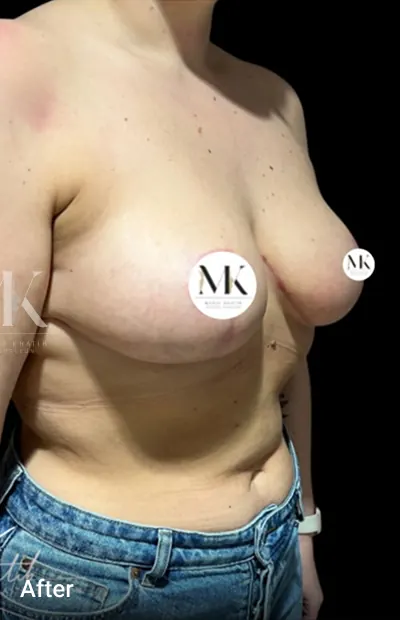
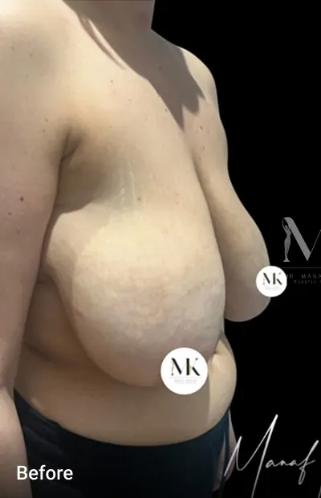
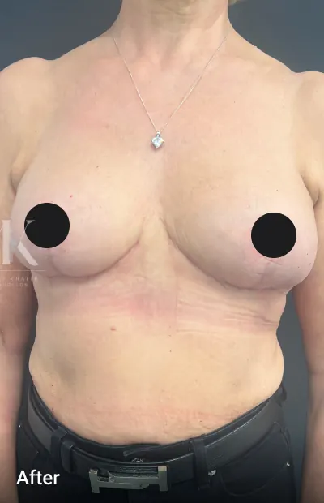
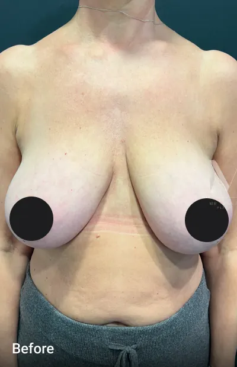
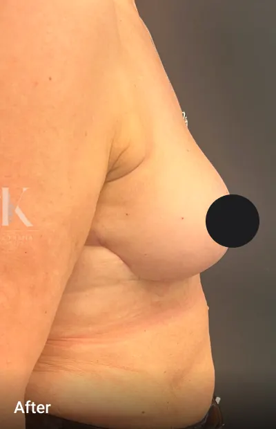
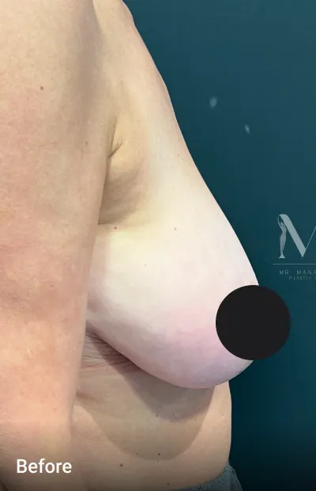
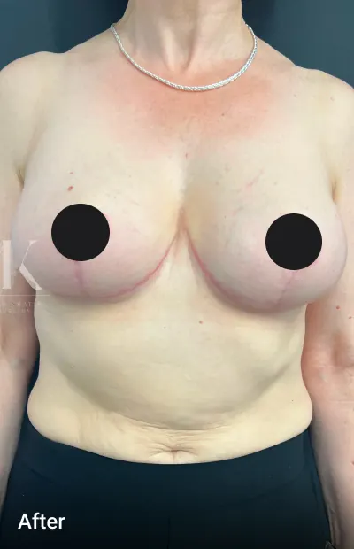
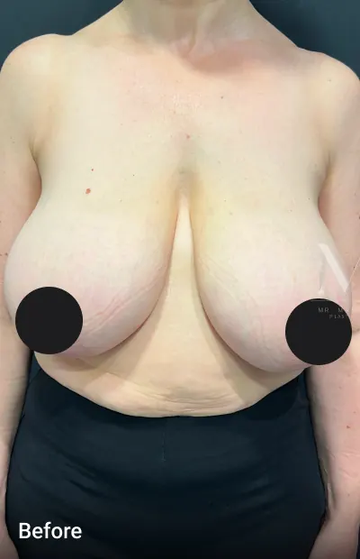
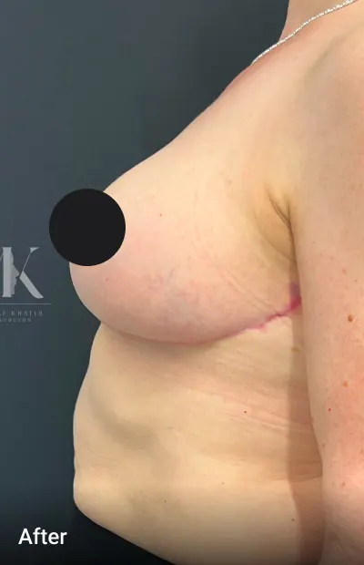
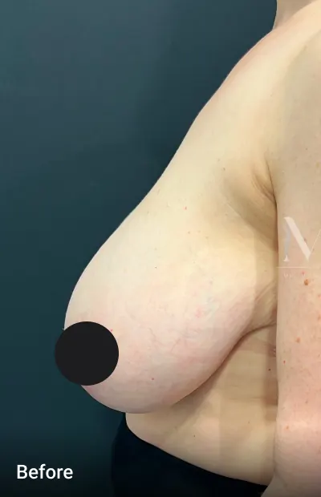
All photos show real patients of Mr Khatib and are shown with their permission. They are unedited. Results vary from person to person, and Mr Khatib will talk you through what is realistic for you.
Book your free mini consultationThe benefits
What a breast reduction can do for you
Less pain in your neck, shoulders and back
Taking away the weight eases the strain your upper body has been carrying.
Better posture
Standing tall feels natural again, rather than something you have to think about.
Exercise in comfort
Run, swim or go to a class without bracing, double bras or bouncing.
Clothes and bras that fit
Shop for your size, not around it. Tops button up and dresses sit properly.
Healthier skin
No more grooves from straps or rashes in the fold beneath your breasts.
A shape in proportion
A lifted, natural breast that suits the rest of your body.
0
of 8 apply to you
Is a breast reduction right for you?
Tick what sounds like you
Breast reduction surgery is for women whose breast size causes physical discomfort or gets in the way of everyday life. Choose anything that feels familiar.
Tick anything that sounds familiar.
Sounds like you? Book a consultationYou are likely to be a good candidate if you are in good general health, at a stable weight, and do not smoke or are willing to stop before surgery.
The procedure
How breast reduction surgery works
Breast reduction surgery, also called reduction mammoplasty, removes excess breast tissue, fat and skin, then reshapes what remains into a smaller, lifted breast. When both sides are treated it is called a bilateral breast reduction.
Mr Khatib removes tissue from the lower and outer parts of the breast, where most of the weight sits. The nipple and areola stay attached to a bridge of living tissue, called a pedicle, which keeps their blood supply and helps preserve sensation where possible. They are then moved up to a natural position, and the areola can be made smaller at the same time.
The remaining tissue is shaped into a lifted, rounder breast. Where suitable, Mr Khatib uses a drainless approach, so you wake up without tubes, which tends to make the first days more comfortable.
The pattern depends on how much tissue needs to come away and how much skin is left. Choose one to see it on the diagram.
You arrive at an accredited private hospital in London or Hertfordshire. Mr Khatib sees you before surgery, answers any last questions and marks the plan on your skin while you stand.
The operation is done under general anaesthetic and usually takes 120 to 150 minutes. You wake in a supportive compression bra. Most women go home the same day with someone to look after them. Some stay one night if that is safer.
- Length of surgery
- 120 to 150 minutes
- Anaesthetic
- General
- Hospital stay
- Usually a day case
- Drains
- Drainless where suitable
- Time off work
- 1 to 2 weeks
- Compression bra
- 6 weeks
Your treatment journey
From first chat to full recovery
How long does a breast reduction take to heal? Most women are back at a desk in one to two weeks and back to normal exercise at three months. Here is what each stage looks like.
Plan your consultation- Step 1
Free mini consultation
A short first conversation about what is bothering you and whether surgery could help. There is no obligation to take it further.
- Step 2
Consultation with Mr Khatib
He asks about your symptoms and health, examines and measures you, and explains scar patterns, recovery and risks in plain terms. You take time to think. There is no deadline.
- Step 3
Surgery day
Markings, a general anaesthetic and around two to two and a half hours in theatre. Most women go home the same day in a compression bra.
- First days
Rest and gentle walks
Expect tightness and soreness that simple painkillers usually manage. Wear your bra day and night, keep your arms below shoulder height and take short walks around the house.
- 1 week
Wound check
A nurse checks your wounds. Many women feel ready for desk work at one to two weeks, depending on their job.
- 2 weeks
Gentle exercise
Longer walks and light activity can start. You will feel more like yourself each day.
- 6 weeks
Review with Mr Khatib
He checks your healing in person. Moderate exercise is fine now and the compression bra usually comes off.
- 3 months and beyond
Back to everything
Full exercise, any bra you like. Mr Khatib reviews you at three months, one year and yearly after that, while your scars keep fading.
Why choose Mr Khatib
Care that starts with honest advice
-
Ethical, never pushy
If surgery is not the right answer for you, he will tell you. You will never be pressed into a decision.
-
Your surgeon, every time
You see Mr Khatib at your consultation, on the day and at every follow-up, not a different team member each visit.
-
Thorough consultations
Unhurried time to understand your goals, so expectations are realistic and there are no surprises.
-
A plan for your body
Your size, shape and scar pattern are chosen around your anatomy and lifestyle, not a template.
-
Fellowship trained in London
Aesthetic and reconstructive fellowships at the Cadogan Clinic, the Wellington, Guy's and St Thomas' and the Royal Marsden.
-
UK and European board certified
One of few UK plastic surgeons to pass both the UK and European plastic surgery board exams. Finalist for Best Surgical Results 2025.
Credentials
- Consultant Plastic Surgeon, GMC 7083951
- Qualified at St George's, University of London
- MSc Surgical Sciences, University of Edinburgh, with distinction
- BAPRAS and BAAPS aesthetic surgery fellowship
- UK and European board examinations
Meet your surgeon
Mr Manaf Khatib
Consultant Plastic, Reconstructive and Aesthetic Surgeon
Mr Khatib is a consultant plastic surgeon based in London and Hertfordshire. His NHS practice is at the Lister Hospital in Stevenage, and he sees private patients at the Cadogan Clinic, Weymouth Street Hospital, St John & St Elizabeth Hospital, Spire Harpenden and One Hatfield Hospital.
He trained in plastic surgery at Cambridge University Hospitals, the Lister, Norfolk and Norwich, and the St Andrew's Centre for Plastic Surgery and Burns. He then completed the BAPRAS and BAAPS aesthetic fellowship at the Cadogan Clinic, a further aesthetic fellowship at the Wellington Hospital, and microsurgery fellowships in breast reconstruction at Guy's and St Thomas' and the Royal Marsden.
That reconstructive background matters in breast reduction, where keeping the blood supply and sensation of the nipple safe is part of every plan. He lectures nationally and publishes in the medical literature.
Honest advice comes first. If surgery is not right for you, he will say so.

Transparent pricing
Breast reduction surgery cost in London
Every fee is confirmed in writing after your consultation, so you know exactly what you are paying for before you decide.
Mini consultation
Free
A short first conversation to talk through your concerns and whether a breast reduction could help.
- No obligation
- In person or by video
- A clear next step
Breast reduction surgery
from £XXXX.XX
Your full surgical fee, quoted for your plan after consultation.
- Surgery by Mr Khatib
- Anaesthetist and hospital fees
- Post-surgery compression bra
- Nurse wound check at 1 week
- Reviews at 6 weeks, 3 months and 1 year
Consultation with Mr Khatib
£XXXX.XX
A full assessment with measurements, photos and a personal surgical plan.
- Time for all your questions
- Written quote afterwards
- A second consultation if you need one
Spread the cost. Finance is available through the hospitals Mr Khatib works with, including the Cadogan Clinic and One Hatfield Hospital. Ask us about payment options at your consultation.
It is a well-established operation, and in the hands of a specialist plastic surgeon in an accredited hospital most women recover without problems. Like any surgery it carries risks, such as bleeding, infection, slow wound healing, changes in nipple sensation and scarring. Mr Khatib goes through each of these with you, and how he reduces them, before you decide anything.
You are asleep for the operation. Afterwards most women describe tightness and aching rather than sharp pain, and it is usually well controlled with simple painkillers. Many say the relief from the weight outweighs the soreness within days.
Many women can, because the nipple stays connected to some of the underlying tissue. It cannot be guaranteed, and some women produce less milk. If you are planning a family, tell Mr Khatib so he can factor it into your plan and timing.
Some change in sensation is common at first and often improves over months. A small number of women have a permanent change. The technique Mr Khatib uses is designed to protect the nerves and blood supply where possible.
Scars are permanent, but they are placed where a bra or bikini covers them. They start pink and firm, then soften and fade over 12 to 18 months. You will be given advice on scar care, and Mr Khatib checks them at each review.
NHS funding for breast reduction is limited and criteria vary by area, so many women are not eligible or face long waits. Your GP can tell you what applies locally. Choosing private surgery means you pick your surgeon and your date.
It is best to be close to a weight you can keep, because large changes afterwards can alter the result. If you are planning to lose a lot of weight, Mr Khatib may suggest doing that first. A healthy weight also lowers the risk of complications.
Yes. Some women have liposuction to the sides of the chest or under the arms during the same operation, to give a smoother outline. Mr Khatib will tell you whether it would make a real difference for you.
The price can look lower, but aftercare is harder when your surgeon is in another country. Flying soon after surgery also raises the risk of blood clots. Having your operation close to home means the same surgeon checks your healing and is there if you need help.
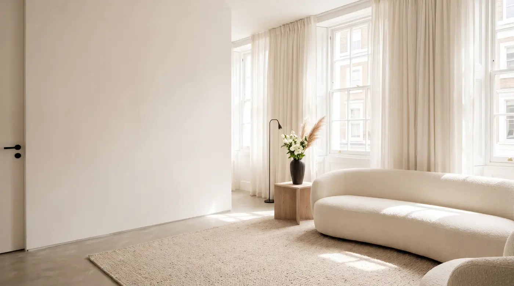
Book a consultation
Start with a free mini consultation
Tell us a little about yourself and we will call you to arrange a time. You can see Mr Khatib in London or Hertfordshire.
- A reply within one working day
- Your details stay private
- No pressure, no obligation
Prefer to talk? 0203 475 0840
Thank you, we have your details
Your request has been sent. We will call you within one working day to arrange your free mini consultation.
On Instagram
Follow @dr_manafkhatib
Real results, recovery tips and honest answers to the questions patients ask most.